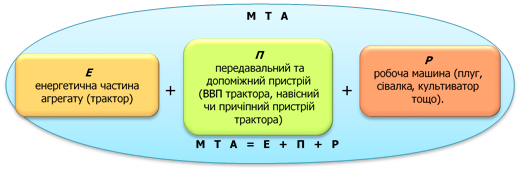

Зміст
- 1. Енергетичні засоби сільськогосподарського вирощування та їх порівняльна характеристика
- 2. Поняття про машинно-тракторний агрегат
- 3. Класифікація машинно-тракторних агрегатів
- 4. Основні вимоги до машинно-тракторних агрегатів
- 5. Значення багатоопераційних машинно-тракторних агрегатів у впровадженні енергозберігальних технологій вирощування сільськогосподарських культур
- Питання для самоконтролю
1. Енергетичні засоби сільськогосподарського вирощування та їх порівняльна характеристика
Енергетичні засоби сільськогосподарського виробництва поділяють на рухомі (мобільні), обмежено рухомі і стаціонарні.
Рухомі засоби енергетики – трактори, самохідні шасі, автомобілі, жива тяглова сила. Крім того, у сільськогосподарському виробництві використовують авіацію.
Обмежено рухомими засобами енергетики є канатно-тракторні і електротракторні системи тяги.
Стаціонарними засобами енергетики є різні електричні і теплові установки, вітряні, гідравлічні та інші двигуни.
Основні енергетичні засоби для проведення технологічних операцій вирощування культур – трактори і самохідні шасі, а під час виконання транспортних робіт – автомобілі і трактори.
На тракторний парк припадає близько 40 % енергетичних потужностей, які є в сільському господарстві країни.
Трактори порівняно з іншими засобами енергетики в рослинництві мають певні переваги: вони маневрені, надійні в експлуатації, економічні, у них порівняно висока стабільність тягових властивостей.
Трактор – це складна самохідна машина, призначена для переміщення й приводу робочих органів мобільних машин та знарядь, перевезення вантажів, приводу стаціонарних машин за допомогою валу відбору потужності.
Характеристика тракторів за призначенням
Трактори загального призначення
Застосовуються для енергоємних сільськогосподарських робіт: оранки середніх і важких ґрунтів, сівби, культивації, дискування. боронування, збирання врожаю та виконання транспортних, землерийних, будівельних, шляхових і навантажувальних робіт. Ці трактори мають тягове зусилля від 20 до 60 кН; робочу швидкість 5-15 км/год; потужність двигуна 60—220 кВт; малий дорожній просвіт (кліренс) 250- 350 мм; широкі шини або гусениці від 390 до 530 мм.
Універсально-просапні трактори
Застосовуються для посіву та догляду за просапними культурами: збирання технічних, зернових культур, картоплі, овочів; оранки легких і середніх ґрунтів: суцільної культивації і боронування; виконання землерийних, транспортних і навантажувальних робіт тощо.
Характерні особливості універсально-просапних тракторів:
- тягове зусилля 2, 6, 9, 14 і 20 кН;
- збільшено відстань до 600-800 мм між поверхнею ґрунту і найнижче розташованими деталями (кліренс);
- невеликий радіус повороту (3-4 м);
- змінна колія;
- мінімально можлива ширина коліс або гусениць;
- робоча швидкість до 15 км/год,
- транспортна швидкість 25-35 км/год;
- потужність двигуна від 14 до 74 кВт.
Орно-просапні трактори
Використовуються для виконання всього комплексу обробітку ґрунту:
- оранки;
- культивації;
- сівби;
- збирання урожаю;
- а також для посіву, догляду і збирання просапних культур та виконання транспортних робіт.
Трактори спеціалізовані
Конструктивні особливості спеціалізованих тракторів:
- у болотних – широкі гусениці для зменшення тиску на поверхню ґрунту;
- у гірських – горизонтальне положення остова при роботі поперек схилу;
- у бавовницьких – триколісна ходова частина зі збільшеним кліренсом та змінною колією ведучих коліс.
Будуються на основі конструкцій існуючих тракторів для роботи в специфічних умовах (болотиста або гірська місцевість), а також для виконання спеціальних робіт, транспортних робіт.
У міжнародній практиці відповідно до стандартів ISO 730/1 і 730/3-82 використовують класифікацію тракторів за максимальною тяговою потужністю \(N_{гак.max}\), отриманою під час випробування енергетичного засобу на гладкій горизонтальній і сухій бетонованій поверхні, або поверхні, покритої скошеною/нескошеною травою. Трактори при цьому поділяють на чотири категорії, кожна з яких відповідним чином співвідноситься з класифікацією енергетичних засобів згідно з міжнародним стандартом ГОСТ 27021-86 (СТ СЭВ 628-85, див. табл. 1.1.1).
| Тяговий клас | Номінальне тягове зусилля (\(P_{гак.н}\), кН) | Базова модель | Потужність двигуна, \(N_e\), кВт | Категорія потужності і тягова потужність, \(N_{гак.max}\), кВт |
|---|---|---|---|---|
| ГОСТ 2702-86 (СТ СЭВ 628-85) | |
(ІSO 730/1 і 730/3-82) | ||
| 0,2 | 1,8 - 5,4 | ХТЗ-1410 | І < 30 | |
| 0,6 | 5,4 - 8,1 | Т-25 | 18,4 | |
| 0,9 | 8,1 - 12,6 | Т-40 | 36,8 | ІІ – 30…70 |
| 1,4 | 12,6 - 18 | **МТЗ-80 | 55,3 | |
| 2 | 18 - 27 | Т-70С | 51,5 | |
| 3 | 27 - 36 | **Т-150К | 121,5 | **ІІІ – 70…135 |
| 4 | 36 - 45 | Т-4 | 80,9 | |
| 5 | 45 - 54 | К-700 | 161,8 | ІV – 135…300 |
| 6 | 54 - 72 | Т-130 | 116,2 | |
| 8 | 72 - 108 | К-710 | 220,5 |
Багаторічна практика останніх років показує, що класифікація згідно з ГОСТ 27021-86 (СТ СЭВ 628-85) дає більш чітку уяву про експлуатаційні властивості трактора. А це, у свою чергу, дозволяє правильно підібрати до нього комплекс сільськогосподарських машин і знарядь.
(Джерело: http://econjournal.vsau.org/files/pdfa/394.pdf)
Порівнюючи трактори за типом ходової частини, існують як переваги, так і недоліки в експлуатації гусеничних і колісних тракторів (рис. 1.1.3).
Останнім часом ходові системи колісних тракторів значно удосконалено. Застосування чотирьох ведучих коліс, пневматичних шин низького тиску, спарених і арочних шин, довантажувачів ведучих коліс сприяло поліпшенню тягово-зчіпних властивостей колісних тракторів.
Тягові показники тракторів – це один із важливіших нормоутворювальних факторів, які є визначальними енергетичної спроможності використання тракторів у конкретних ґрунтових умовах. Показники енергетичних властивостей визначають як дослідним шляхом, так і розрахунковим.
За даними випробувань будують тягову характеристику.
Тягова характеристика – це залежність тягової потужності (\(N\)), робочої швидкості (\(V_p\)), годинної витрати палива питомої витрати палива (\(G_{год}\)) і величини буксування (\(\delta\)) від зміни тягового зусилля (\(P_{т}\)) (рис. 1.1.4).
Для тракторів, які використовують у сільськогосподарському виробництві, номінальне тягове зусилля визначають як гранично-максимальне тягове зусилля за умови зчеплення з ґрунтом.
Номінальне тягове зусилля трактора — це зусилля, яке трактор розвиває на стерні середньої щільності і нормальної вологості ґрунту (8-18%) в зоні максимального значення тягового ККД, маючи експлуатаційну масу, яка встановлена в технічній характеристиці, при коефіцієнті буксування ≤18% - для колісних тракторів (4x2), 16% - (4 x 4) і ≤5% - для гусеничних тракторів.
Сукупність типів тракторів створює їх типаж, що охоплює кілька класів машин, які різняться між собою значенням номінального тягового зусилля. Кожний клас складається з групи конструктивно уніфікованих тракторів, що мають приблизно однакові тягові зусилля.
| Клас тяги трактора, тс | Номінальне тягове зусилля, кН | Трактори |
|---|---|---|
| 0,2 | 2 | Т-012, ХТЗ-1410, ХТЗ -1210, ХТЗ-1611, МТЗ-08БС, МТЗ-112ТС |
| 0,6 | 6 | ХТЗ-2511, ХТЗ-2512, ХТЗ-3510, ХТЗ-3521, МТЗ-80, МТЗ-320А, СШ-2540, Т-25ФМ, Т-16МГ |
| 0.9 | 9 | ХТЗ-3130, ХТЗ-5020, ХЗ-6020, ХТЗ-6021, ЛТЗ-55, Т-40М, Т-25Х4М |
| 1,4 | 14 | ЮМЗ-6АКЛ, ЮМЗ-650, ЮМЗ-8070, ЮМЗ-8271, ЮМЗ-8274, ЮМЗ-8280, МТЗ-8060, МТЗ-100, МТЗ-570, МТЗ-590, МТЗ-800, МТЗ-900, ЛТЗ-60АБ |
| 2,0 | 20 | ХТЗ-100, Т-70СМ, Т-70В, Т-90С, МТЗ-1021, МТЗ-1221, МТЗ-1222, ЛТЗ-95, ЛТЗ-155 |
| 3,0 | 30 | ХТЗ-150К-03, ХТЗ-150К-09, ХТ3-150К-12, МТЗ-1523, ХТЗ-151К, ХТЗ-17021, ХТЗ-17022, ХТЗ-17221, ХТЗ-17321, ХТЗ-147421, ХТЗ-121, Т-150-05-09, ХТЗ-153Б, ХТЗ-150-07, X13-150-08, Т-156А, Т-156Б, Т-156М, Т-150Д, ХТЗ-150Д-03, Т-150Д-05-09, ДТ-75Д, ДТ-75Н, ДТ-75МЛ, ДТ-175М, ДТ-175С |
| 4,0 | 40 | ХТЗ-180Р, ХТЗ-181, ХТЗ-201, ХТЗ-18040, ХТЗ-21042 |
| 5,0 | 50 | ХТЗ-220, К-700А, К-701, К-701М, К-734, К-744 |
| 6,0 | 60 | Т-130, Т-170М |
2. Поняття про машинно-тракторний агрегат
Машинно-тракторним агрегатом називають сукупність (раціональне співвідношення) робочих машин з джерелом енергії (трактором, самохідним шасі, електродвигуном) для виконання технологічної операції або певної групи операцій.
3. Класифікація машинно-тракторних агрегатів
Усі МТА розрізняють: за призначенням, кількістю виконуваних операцій, способом їх виконання, характером використання джерела енергії і передавального механізму агрегату, способом з'єднання з трактором, розміщенням машин відносно трактора.
|
|
|
|
|
|
|
|
|
|
|
|
|
|
|
|
| Потужність двигунів трактора витрачається на переміщення самого трактора і робочої машини, що виконує будь-яку технологічну операцію (оранку, боронування тощо). Під час використання з трактором транспортних причепів або кузовів тяговий агрегат називають транспортним | Потужність двигуна використовується не тільки на переміщення самого трактора і машини, а і для урухомлення механізмів робочої машини (від ходових коліс машини, або через вал відбору потужності трактора) | Передавання потужності від двигуна до робочої машини здійснюється через вал відбору потужності (ВВП), пасову передачу, а також за допомогою електро- чи гідроурухомника |
|
|
|
|
| Складається з трактора і причіпної робочої машини, що має свою ходову частину (колеса, полозки тощо), або кількох машин і зчіпки | Складається з трактора (самохідного шасі), начіпної (або кількох) робочої машини і начіпної зчіпки, як правило, маса всієї машини у транспортному положенні сприймається ходовою частиною трактора. У робочому стані маса машини повністю або частково сприймається ґрунтом через робочі колеса, площини і робочі органи | Відрізняється від начіпних тим, що вага робочих машин під час транспортування розподіляється між опорними колесами самої машини і ходовою частиною трактора |
|
|
|
|
|
|
|
|
|
4. Основні вимоги до машинно-тракторних агрегатів
Для проведення сільськогосподарських робіт застосовують багато машинно-тракторних агрегатів різних типів і видів. До них ставлять певні вимоги (агротехнічні, технічні, економічні, ергономічні, охорони праці), яких слід додержувати під час комплектування машинно-тракторних агрегатів.
Агротехнічні вимоги ставлять до робочої машини і трактора
Під час підбору робочої машини слід врахувати якісні показники і агронормативи (глибина оранки, висота зрізування рослин, норма висіву тощо), яким має задовольняти виконана операція; технологічні допуски, допуски втрати врожаю, пошкодження рослин тощо.
До трактора ставлять такі вимоги – прохідність у горизонтальній площині за значенням колії і шириною рушія; прохідність у вертикальній площині за польовим зазором і наявністю обтічників; прохідність за станом ґрунту – недопустимість утворення глибокої колії, значних деформацій, розпилення, ущільнення тощо.
Технічні вимоги охоплюють: допустимі швидкісні режими як руху, так і робочих органів (частота обертання молотильного барабана) машин, кінематичні показники агрегатів, експлуатаційна надійність трактора, машини і агрегату загалом.
Економічні фактори містять мінімальну собівартість за найменших затрат праці. Вихідними даними для визначення собівартості є: продуктивність агрегату, витрати на технічне обслуговування тощо.
Вимоги до зручності обслуговування:
- зручність керування агрегатом (оглядовість, легкість контролю за робочими органами, підтримання технологічного режиму тощо);
- зручність технічного обслуговування;
- зручність технологічного обслуговування.
Вимоги охорони праці.
Гігієнічні норми стосовно сільськогосподарського виробництва визначають допустимий рівень вібрації, загазованості, запиленості, оптимальну температуру, освітленість і подібні показники на робочому місці механізатора, що забезпечують нешкідливі і безпечні умови праці.
Антропологічні норми характеризують відповідність робочого місця розмірам людини (раціональна поза, постава, огляд і деякі інші фактори).
Фізіологічні норми характеризують оптимальні умови функціонування людського організму (зусилля на педалях, важелях тощо).
5. Значення багатоопераційних машинно-тракторних агрегатів у впровадженні енергозберігальних технологій вирощування сільськогосподарських культур
Ресурсозберігальна технологія забезпечує, крім збереження такого важливого ресурсу, як праця, зниження матеріалоємності і підвищення енергоекономічності системи машин, яка оновлюється; передбачає оптимізацію затрат мінеральних добрив, зокрема і через збільшення виробництва і застосування високоякісних органічних добрив, зменшення витрат пестицидів через використання більш ефективних препаратів і економних способів їх застосування; зниження затрат цілого комплексу всіх інших ресурсів через поєднання технологічних операцій (рис. 1.1.7).
Частковим варіантом ресурсозберігальних технологій є енергозберігальні технології, в яких основну увагу приділяють економії енергетичних ресурсів та хімічних засобів захисту рослин.
Ця технологія базується на використанні досягнень науки та виробничого досвіду, а саме:
- використання енергонасичених агрегатів, які виконують декілька поєднаних операцій за один прохід агрегату (комбіновані і комплексні агрегати);
- локальне внесення добрив;
- стрічкове внесення гербіцидів;
- смугове обприскування посівів технічних культур;
- зниження норм витрат матеріалів через підвищення якості та чіткості виконання операцій;
- чітке дотримання агронормативів у просторі і часі.
Основний показник формування багатоопераційних МТА – якість роботи; проте не слід забувати і про їхні продуктивність і економічність.
Застосування багатоопераційних агрегатів дає змогу:
- поліпшити завантаження тракторів за тягою, особливо в разі поєднання малоенергетичних операцій з енергоємними;
- зменшити кількість проходів на полі трактора як ведучої ланки агрегату, що зменшує ущільнення ґрунту, його розпил і ерозію;
- скорочувати затрати праці на одиницю оброблювальної площі;
- підвищувати продуктивність агрегатів.
Питання для самоконтролю
- Які енергетичні засоби використовують у сільському господарстві?
- Як поділяють сільськогосподарські трактори?
- Міжнародна класифікація тракторів за тяговою потужністю.
- Що таке машинно-тракторний агрегат?
- Класифікація машинно-тракторних агрегатів.
- Які основні вимоги ставлять до комплектування машинно-тракторних агрегатів?
- Назвіть переваги використання багатоопераційних агрегатів.